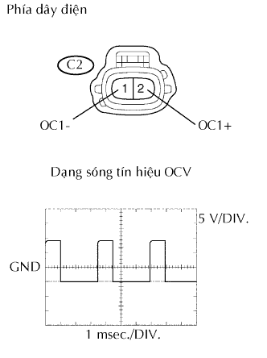
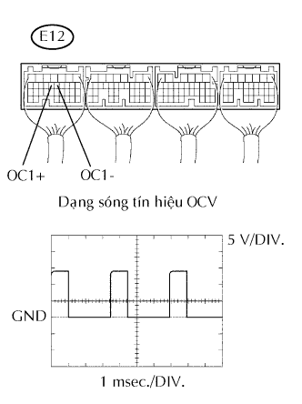
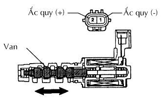
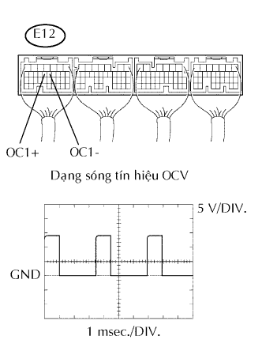
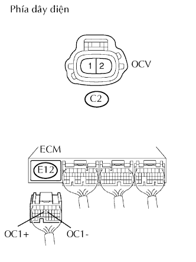

DTC P0010/39 Mạch bộ chấp hành vị trí trục cam "A" (Thân máy 1) |
| Số mã DTC | Điều kiện phát hiện DTC | Khu vực nghi ngờ |
| P0010/39 | Hở hay ngắn mạch trong mạch van điều khiển dầu (thuật toán phát hiện 1 hành trình) |
|
| 1.TIẾN HÀNH THỬ KÍCH HOẠT (HOẠT ĐỘNG OCV) |
Khởi động và hâm nóng động cơ.
Tắt khoá điện.
Nối máy chẩn đoán với giắc DLC3.
Bật khóa điện đến vị trí ON và bật máy chẩn đoán ON.
Vào các menu sau: Powertrain / Engine and ECT / Active Test / Activate the VVT System (Bank 1).
Dùng máy chẩn đoán, kích hoạt OCV và kiểm tra tốc độ động cơ.
| Hoạt động của máy chẩn đoán | Điều kiện tiêu chuẩn |
| OCV là OFF | Tốc độ động cơ bình thường |
| OCV là ON | Không tải rung hay chết máy |
|
| ||||
| NG | |
| 2.KIỂM TRA CỤM VAN ĐIỀU KHIỂN DẦU PHỐI KHÍ TRỤC CAM (TÍN HIỆU OCV) |
|  |
Ngắt giắc nối C2 của OCV.
Trong khi đang chạy không tải động cơ, hãy kiểm tra dạng sóng của giắc nối OCV bằng cách dùng máy đo hiện sóng.
| Nối dụng cụ đo | Điều kiện tiêu chuẩn |
| C2-2 (OC1+) - C2-1 (OC1-) | Dạng sóng đúng như trong hình vẽ |
| Đặt dụng cụ | Điều kiện |
| 5 V/DIV., 1 msec./DIV. | Tăng ga chậm sau khi hâm nóng động cơ |
|
| ||||
| NG | |
| 3.KIỂM TRA ECM (TÍN HIỆU OCV) |
|  |
Trong khi đang chạy không tải động cơ, hãy kiểm tra dạng sóng của giắc nối ECM bằng cách dùng máy đo hiện sóng.
| Nối dụng cụ đo | Điều kiện tiêu chuẩn |
| E12-13 (OC1+) - E12-12 (OC1-) | Dạng sóng đúng như trong hình vẽ |
| Đặt dụng cụ | Điều kiện |
| 5 V/DIV., 1 msec./DIV. | Tăng ga chậm sau khi hâm nóng động cơ |
|
| ||||
| OK | ||
| ||
| 1.THÁO CỤM VAN ĐIỀU KHIỂN DẦU PHỐI KHÍ TRỤC CAM (HOẠT ĐỘNG OCV) |
|  |
Ngắt giắc nối C2 của OCV.
Cấp điện áp dương ắc quy vào giữa các cực của van OCV.
Kiểm tra tốc độ động cơ.
|
| ||||
| OK | |
| 2.KIỂM TRA ECM (TÍN HIỆU OCV) |
|  |
Trong khi đang chạy không tải động cơ, hãy kiểm tra dạng sóng của giắc nối ECM bằng cách dùng máy đo hiện sóng.
| Nối dụng cụ đo | Điều kiện tiêu chuẩn |
| E12-13 (OC1+) - E12-12 (OC1-) | Dạng sóng đúng như trong hình vẽ |
| Đặt dụng cụ | Điều kiện |
| 5 V/DIV., 1 msec./DIV. | Tăng ga chậm sau khi hâm nóng động cơ |
|
| ||||
| OK | |
| 3.KIỂM TRA DÂY ĐIỆN (VAN ĐIỀU KHIỂN DẦU PHỐI KHÍ TRỤC CAM (OCV) - ECM) |
|  |
Ngắt giắc nối C2 của OCV.
Ngắt giắc nối E12 của ECM.
Đo điện trở của các giắc nối phía dây điện.
| Nối dụng cụ đo | Điều kiện tiêu chuẩn |
| C2-2 - E12-13 (OC1+) | Dưới 1 Ω |
| C2-1 - E12-12 (OC1-) | Dưới 1 Ω |
| C2-2 hay E12-13 (OC1+) - Mát thân xe | 10 kΩ trở lên |
| C2-1 hay E12-12 (OC1-) - Mát thân xe | 10 kΩ trở lên |
|
| ||||
| OK | ||
| ||